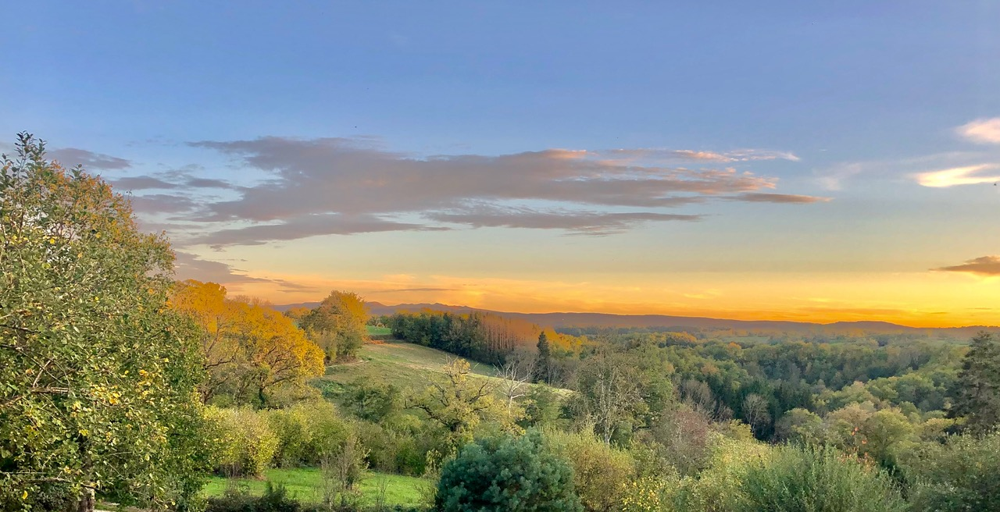

La Poumerole Charensat
Vous séjournerez en pension complète (végétarien) dans une superbe bâtisse en pierre du XIXe. L’ensemble rénové avec goût offre tout le confort moderne. Une salle de pratique dédiée, de belles chambres spacieuses sur un terrain arboré d’un hectare avec vue panoramique sur la vallée et le Puy de Sancy. Un lieu idyllique pour prendre du temps pour soi.

La Maison
Un grand séjour-cuisine lumineux avec une terrasse panoramique pour se détendre entre les séances et profiter dedans comme dehors de déjeuners et dîners végétariens à base de produits locaux & biologiques.
Le centre bouddhiste DhagpoKundreul-Ling
…Partager un lieu magique là où le temps s’arrête…
Un espace pour s’inspirer, pratiquer & se recentrer.
Le centre bouddhiste Européen de DhagpoKundreul-Ling se trouve à 6km de la Poumerole, endroit inspirant et ressourçant avec le temple, les monastères et la bambouseraie ainsi que les magnifiques balades, les lacs et étangs avec une faune et une flore riche et préservée.